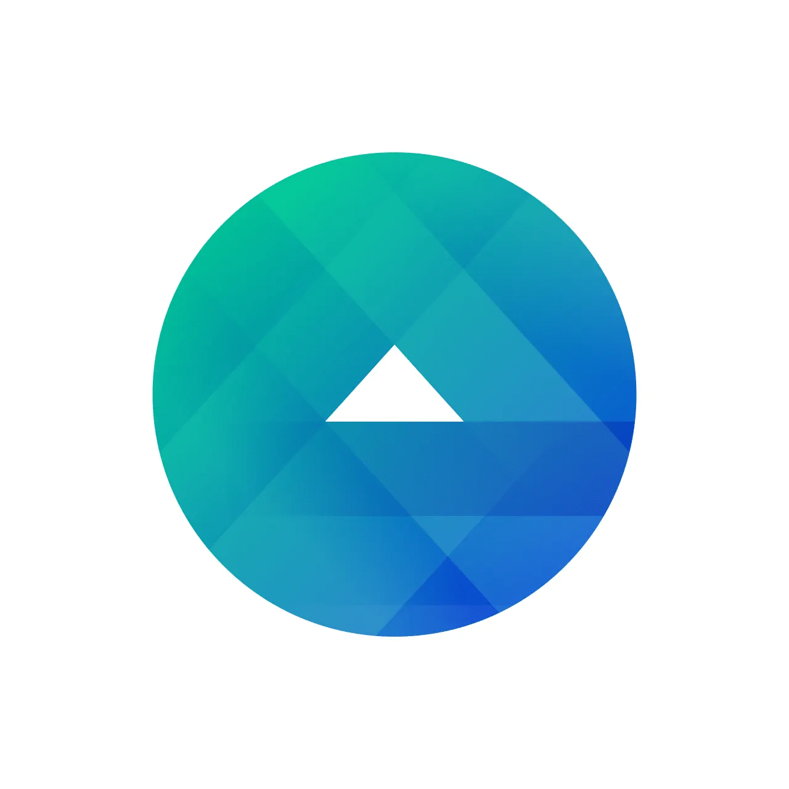

End-to-End Operational Flow
Data
Inputs
Inputs
Platform APIs
Google · Meta · TikTok · LinkedIn
Sunday 11pm
Trigger: Automated Data PullAll four platforms sync simultaneously every Sunday at 11pm via API connections. No manual export required.
CAPI + UTM Layer
Signal integrity mandate
Signal FoundationConversion API integration recovers 20%+ of lost conversion data. Universal UTM taxonomy enables true cross-platform deduplication.
Google Sheets
Master data repository
Supermetrics / Coupler.ioAll platform data lands in a structured Google Sheets workbook. Columns mapped: campaign, ad set, creative, spend, impressions, clicks, conversions, CPL.
AI
Analysis
Analysis
Genspark AI
Anomaly detection
Genspark Anomaly EngineScans all data for: CPM deviation over 20% from 30-day average, CTR drop over 15% week-over-week, spend pacing variance over 10%, conversion rate shift over 25%.
ChatGPT
Narrative + QA
Custom GPT: Gaming Ads QAReads anomaly flags and generates plain-English explanations, severity ratings (Low/Medium/High), root cause hypotheses, and recommended actions. 60-70% QA time reduction.
Perplexity AI
Competitive context
Real-Time Market IntelligencePerplexity enriches anomaly reports with competitive context: industry CPM benchmarks, competitor creative shifts, market-level demand signals.
Comet Agent
Agentic pacing
Agentic
Comet Agentic BrowserAutonomously logs into LinkedIn Ads, reads pacing data cell-by-cell, maps to the master spreadsheet, calculates daily required spend, and writes results back to Google Sheets.
Automation
and Routing
and Routing
Zapier
Alert routing
Budget Monitoring AlertsLevel 2 alert (10-20% variance): Slack DM to campaign manager. Level 3 alert (over 20% variance): Slack DM to director + email to client lead. All automated, no human trigger needed.
Make
Pipeline orchestration
Multi-Step AutomationMake handles complex data transformation: API response parsing, multi-platform data merging, conditional logic routing, and Looker Studio data push.
Notion AI
SOP and test log
MASTER Automation DirectoryEvery automation is logged with: task name, goal, how-to, date tested, date implemented, main POC. Prevents duplicate work and creates team accountability.
Lyra GPT
Prompt standardization
Custom Prompt Optimizer4-D methodology: Deconstruct intent, Diagnose gaps, Develop optimal technique, Deliver structured prompt. Ensures consistent AI output quality across all team members.
Delivery
and Action
and Action
Slack Alert
Monday 8am auto-delivery
Auto
Automated Monday BriefingFull performance report delivered to Slack every Monday at 8am. Includes anomaly flags, pacing status, and recommended actions. Zero human preparation required.
Looker Studio
Client dashboard
Blended MER DashboardLooker Studio dashboard layers platform metrics with UTM-based CRM signals. Media Efficiency Ratio (MER) is the north-star metric. Updated automatically, always live.
Strategy Time
Freed bandwidth
+70%
The Real OutputReclaimed time is reinvested into: creative strategy, audience architecture, client ideation, and proactive recommendations. This is what retained Epic Games for 8 years.
Client Retention
Epic Games · 8 years
The Business Outcome8-year Epic Games retention — longest in Moonrock agency history. Proactive strategy, not reactive execution, is what keeps clients. AI made proactive strategy possible at scale.
Data input layer
AI analysis layer
Automation and routing layer
Delivery and action layer
Hover any node for detail
Four Core Workflows
01
Automated Reporting Pipeline
1
Sunday 11pm: All platform APIs sync to Google Sheets master workbook via Supermetrics/Coupler.io
2
Genspark AI scans for anomalies against configured thresholds across all campaigns
3
ChatGPT Custom GPT generates plain-English anomaly narrative with severity ratings and recommended actions
4
Make orchestrates data push to Looker Studio dashboard and formats executive summary
5
Zapier delivers full report to Slack at Monday 8am. Zero human preparation required.
ChatGPT
GGenspark
Zapier
Looker
02
Agentic Pacing Workflow (Comet)
1
Comet agent authenticates to LinkedIn Ads via 1Password passkey integration (no stored credentials)
2
Agent reads pacing data cell-by-cell: campaign name, daily budget, spend-to-date, days remaining
3
Maps each row to the master Google Sheets workbook and calculates daily required spend vs. actual
4
Flags campaigns over 10% variance as "At Risk." Flags campaigns over 20% as "Critical."
5
Delivers formatted pacing report via Slack DM to campaign manager before 9:30am daily
CComet
💬 Slack
📊 Google Sheets
03
AI-Powered QA System
1
Campaign manager exports campaign settings to structured format and submits to Gaming Ads QA GPT
2
Custom GPT checks against 40-point QA checklist: targeting, bidding, creative specs, tracking, naming conventions
3
GPT outputs structured error report: issue type, severity, exact location, recommended fix
4
Human reviews and approves fixes. No AI publishes directly. Human-in-the-loop required.
5
Result: 60-70% QA time reduction. 90%+ error detection rate maintained.
QA Custom GPT
Notion QA Log
04
AI-Driven Creative Testing Loop
1
Lyra GPT generates structured creative brief from audience data, competitive intelligence, and past performance signals
2
ChatGPT produces 3-5 ad copy variants per format. Human creative team reviews and selects before any goes live.
3
Approved variants launch in structured A/B test. Meta Advantage+ and Google Ads Rules monitor performance thresholds.
4
Winning signals tagged in Notion AI library and fed back into next brief cycle. Every iteration starts smarter.
ChatGPT
Notion AI

Meta Advantage+Google Rules
The Full AI Tool Stack
Analysis and Intelligence
ChatGPT / Custom GPTs
QA automation, brief writing, anomaly narrative, ad copy generation
Gaming Ads QA GPT + Lyra
G
Genspark AI
Spreadsheet analysis, anomaly detection, cross-dataset correlation, agentic browsing
Reporting + Pacing Agent
Perplexity AI
Real-time competitive research, audience lookups, market intelligence
Research and Planning
Semrush
SEO keyword tracking, competitor gap analysis, content opportunity identification
SEO and Competitive Intel
Automation and Orchestration
Zapier
Budget monitoring alerts, QA workflow routing, cross-platform triggers, Slack notifications
Budget Alert System
Make (Integromat)
Complex multi-step automations, API integrations, data transformation pipelines
Reporting Pipeline
C
Comet (Perplexity)
Agentic browser automation, LinkedIn pacing, Google Sheets updates, Slack DM delivery
Agentic Pacing Workflow
Looker Studio
Automated dashboards, executive reporting, client-facing interactive views, MER tracking
Client Dashboards
Documentation and Native AI
Notion AI
MASTER Automation Directory, SOPs, test logs, prompt library, team knowledge base
Automation Directory
L
Lyra (Custom GPT)
Prompt optimization across all AI tools. 4-D methodology: Deconstruct, Diagnose, Develop, Deliver
Prompt Standardization
Google Ads Automated Rules
Bid adjustments, budget pacing alerts, creative pause rules. Native, ToS-compliant.
Native Automation
Meta Advantage+ and Auto Rules
AI-driven audience expansion, creative optimization, budget reallocation, pacing alerts
Native AI Optimization
Impact at a Glance
70%
Team hours reclaimed from execution tasks
Reporting, QA, bid adjustments, pacing checks
Redirected to strategy
60-70%
QA time reduction via Gaming Ads QA GPT
90%+ error detection rate maintained
Quality preserved
30min
Daily execution check, down from a full day
Automated pipeline replaced manual reporting
Fully automated
0.894
LinkedIn-to-session correlation surfaced by AI analysis
Validated campaign effectiveness in minutes vs. hours
AI-surfaced insight
$7.66
Best-performing targeting type identified (Groups, per session)
vs. $88.64 for underperforming region. AI flagged reallocation.
Budget reallocation
8yr
Epic Games retained, longest in agency history
Proactive strategy enabled by freed bandwidth
The real outcome
Implementation Timeline
Week 1-2
Time Audit and Signal Foundation
Audited where 100% of team hours were going. Mandated CAPI integration and UTM taxonomy standardization across all platforms. Identified reporting, QA, and pacing as the 70% time drain.
CAPI Setup
UTM Taxonomy
Week 3-4
Automated Reporting Pipeline Live
Built the full 7-step reporting automation: API sync, Genspark anomaly detection, ChatGPT narrative generation, Make orchestration, Looker Studio dashboard, Zapier Slack delivery. First automated Monday report delivered.
Genspark
ChatGPT
Make
Zapier
Week 5-6
QA GPT Rollout and Pacing Automation
Gaming Ads QA Custom GPT deployed with 40-point checklist. 30-day rollout with human oversight. Comet agentic pacing workflow tested in sandbox mode (read-only). LinkedIn pacing reports automated.
QA GPT
Comet Sandbox
Week 7-8
Lyra Prompt System and Team Adoption
Lyra custom GPT deployed for prompt standardization. MASTER Automation Directory built in Notion. Team trained on all workflows. Comet moved from sandbox to read-only to light-write mode. Team becomes advocates, not resistors.
Lyra GPT
Notion Directory
Team Training
Ongoing
Creative Testing Loop and Continuous Improvement
AI-driven creative testing workflow operational. Winning signals fed back into Notion library. Execution check reduced to 30 minutes daily. Freed bandwidth reinvested into proactive client strategy. Epic Games retained for 8 years.
Creative Loop
30min Daily Check
Epic Games 8yr